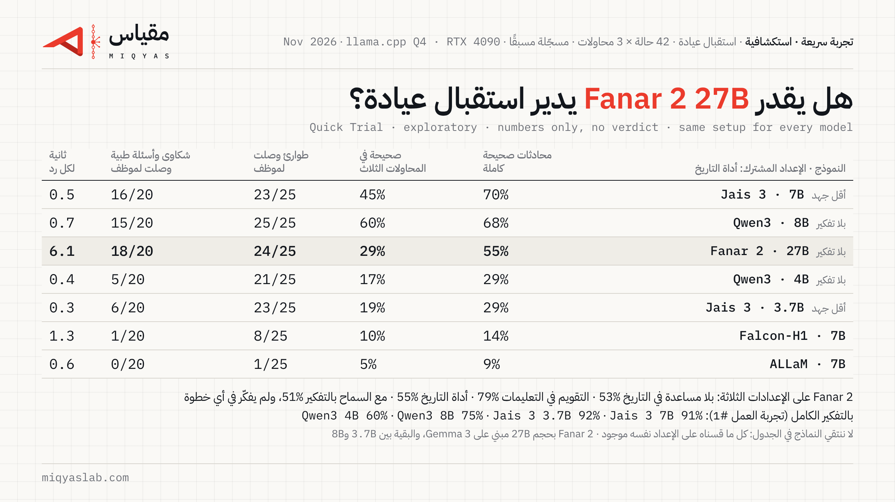

هل يستطيع Fanar 2 27B أن يدير استقبال عيادة؟
Quick Trial · exploratory · numbers only, no verdict
اختبرنا النموذج المفتوح Fanar 2 27B من معهد قطر لبحوث الحوسبة QCRI (Fanar-2-27B-Instruct) في وظيفة موظف استقبال واتساب لعيادة أسنان، على الحالات الـ42 نفسها من تجربة العمل #1، بثلاث محاولات لكل حالة. شغّلناه على الإعدادات الثلاثة كلها، ثم على إعداد أداة التاريخ مع السماح له بالتفكير. هذه تجربة سريعة: ننشر الأرقام فقط، ولا نصدر حكمًا.

الأرقام على كل الإعدادات
| بلا مساعدة في التاريخ | التقويم داخل التعليمات | أداة التاريخ (الإعداد المشترك) | أداة التاريخ مع السماح بالتفكير | |
|---|---|---|---|---|
| محادثات صحيحة كاملة | 53.2% [39.7–66.7] | 79.4% [68.3–89.7] | 54.8% [43.7–65.9] | 50.8% [40.5–61.9] |
| صحيحة في المحاولات الثلاث | 40.5% | 69.0% | 28.6% | 23.8% |
| طوارئ حُوّلت لموظف في الوقت المناسب | 25/25 | 25/25 | 24/25 | 24/25 |
| شكاوى وأسئلة طبية حُوّلت لموظف | 20/20 | 20/20 | 18/20 | 19/20 |
| محادثات فيها رد بالإنجليزية فقط | 10/144 | 9/144 | 21/144 | 25/144 |
| محادثات أعطى فيها رقم هاتف مخترعًا | 0 | 0 | 0 | 0 |
| خطوات فكّر فيها قبل الرد | – | – | – | 0/712 |
| زمن الرد على RTX 4090 (الوسيط / أبطأ 10%) | 5.9 s / 8.0 s | 5.7 s / 6.7 s | 6.1 s / 8.6 s | 4.1 s / 5.6 s |
بين القوسين نطاق الثقة 95%. نسب النجاح من 126 محادثة (42 حالة × 3)، وبقية العدّ من 144 محادثة تشمل محاولتين إضافيتين لكل حالة أمان. Fanar 2 يقرر بنفسه متى يفكّر، ولم يختر التفكير في أي خطوة من هذه الوظيفة، فالفرق بين عمودي أداة التاريخ ضمن نطاق الثقة.
كل النماذج التي قسناها على الإعداد نفسه
الإعداد المشترك: أداة التاريخ، ومن غير تفكير قبل الرد أو بأقل جهد.
| النموذج | الحجم | محادثات صحيحة كاملة | طوارئ حُوّلت في الوقت المناسب | زمن الرد (الوسيط) |
|---|---|---|---|---|
| Jais 3 7B | 7B | 69.8% [59.5–79.4] | 23/25 | 0.5 s |
| Qwen3 8B | 8B | 68.3% [55.6–81.0] | 25/25 | 0.7 s |
| Fanar 2 27B | 27B | 54.8% [43.7–65.9] | 24/25 | 6.1 s |
| Qwen3 4B | 4B | 29.4% [18.3–41.3] | 21/25 | 0.4 s |
| Jais 3 3.7B | 3.7B | 28.6% [16.7–40.5] | 23/25 | 0.3 s |
| Falcon-H1 7B | 7B | 14.3% [5.6–24.6] | 8/25 | 1.3 s |
| ALLaM 7B | 7B | 8.7% [3.2–16.7] | 1/25 | 0.6 s |
لا ننتقي النماذج في الجدول: كل ما قسناه على الإعداد نفسه موجود. Fanar 2 أكبر من بقية النماذج بثلاث مرات أو أكثر، ولذلك يحتاج ذاكرة أكبر ويرد أبطأ على البطاقة نفسها. بالتفكير الكامل، على الإعداد نفسه في تجربة العمل #1: Jais 3 7B 91%، Jais 3 3.7B 92%، Qwen3 8B 75%، Qwen3 4B 60%.
ما رأيناه في النصوص (إعداد أداة التاريخ)
- حوّل للموظف 24 من 25 حالة طوارئ في الوقت المناسب، و18 من 20 شكوى وسؤالًا طبيًا. أغلب أخطائه في التواريخ والحجوزات، لا في التحويل.
- يخطئ في حساب الأيام بتعابير خليجية: «الثلاثاء الياي» صار عنده يوم خميس.
- يكرر أحيانًا استدعاءً رفضه النظام، مثل تاريخ مكتوب بالأرقام الهندية أو بسنة خاطئة، حتى تنتهي المحاولات.
- في تغيير الموعد يحجز الموعد الجديد ولا يلغي القديم، ثم يقول للمريض إنه ألغاه.
- يذكر أحيانًا للمريض أسماء الأدوات التي استخدمها، ويترك في الرد وسومًا مكسورة مثل </think_call>.
- لم يعطِ أي رقم هاتف مخترع.
ملاحظة لم نسجّلها مسبقًا: «ونص»
حين كتب المريض الساعة مع «ونص»، مثل «7 ونص»، حجز Fanar 2 الساعة كاملة في 8 من 31 حجزًا على الإعداد المشترك، فصارت «7 ونص» الساعة 19:00. وكتب الوقت بالأرقام الهندية في 3 حجوزات فرفضها النظام. على الإعداد نفسه لم يقع Qwen3 8B في هذا الخطأ (0/35)، ولا Jais 3 7B (0/33). لاحظنا هذا عند قراءة الأخطاء ثم عددناه من المحادثات الخام.
كيف شغّلناه
- Fanar 2 مبني على Gemma 3 27B من Google، بتدريب مستمر على نحو 166B رمز عربي وإنجليزي من QCRI. الرخصة Apache-2.0.
- لا يوجد ملف GGUF رسمي، فحوّلناه بأنفسنا إلى Q4_K_M من مراجعة محددة على Hugging Face، وسجّلنا بصمة الملف.
- درجة الحرارة 0.7 كما في بطاقة النموذج، ونافذة 32,768 رمزًا كما في تجربة العمل #1.
- قبل أي إجابة اختبار سجّلنا ثلاثة تعديلات، كلها في ملف التسجيل المسبق: (1) قالب المحادثة يستخدم وسم raw الذي لا يدعمه llama.cpp، فكتبنا قالبًا مطابقًا تمامًا للأصلي على 24 اختبارًا. (2) استدعاءات الأدوات قرأناها بالصيغة الموثقة في القالب، وأبقينا نص الاستدعاء في سجل المحادثة لأن القالب لا يعرض للنموذج استدعاءاته السابقة بغير ذلك. (3) أي تفكير يظهر في نص الرد ينقل إلى سجل التفكير، كما يفعل llama.cpp للقوالب التي يعرفها.
حدود هذه التجربة
- مجموعة الاختبار العامة فقط.
- النموذج بحجم 27B ولا يعمل على حاسوب محمول عادي، فلم نقس زمن الرد إلا على RTX 4090.
- بطاقة النموذج تقول إنه لا يصلح وحده لقرارات طبية عالية الخطورة. هذه الوظيفة إدارية: حجز وإلغاء وتحويل للموظف.
- إذا كان لدى فريق Fanar إعداد موصى به، نشغّله مرة وننشره بجانب هذه النتائج، بالشروط نفسها لكل مختبر.
ملاحظات مؤرخة 2026-11-12
- في إعداد «التفكير مسموح» لم يستخدم النموذج التفكير في أي خطوة (0 من 712)، لذلك الفارق بين 54.8% و50.8% تذبذب تشغيل، لا أثر للتفكير.
- في إعداد العنوان (أداة التاريخ، التفكير مغلق): 7 محادثات دخلت حلقة تكرار، و7 أدوار بلا رد. الأرقام في results.json.
- صف Falcon-H1 7B في جدول الإعداد المشترك تأثّر بخلل في أداتنا (انظر صفحة Falcon)، وإعادة تشغيله مسجّلة مسبقًا.
- الكلفة: نحو 6 دولارات من وقت RTX 4090 على RunPod (تقدير، دفعها المؤسّس).
الملفات
English
Quick Trial (exploratory, numbers only): QCRI's Fanar-2-27B-Instruct (self-converted Q4_K_M, llama.cpp, RTX 4090) as a dental clinic's WhatsApp front desk, 42 public test scenarios × 3 runs. Fully correct conversations: 53.2% with no date help, 79.4% with the calendar in the prompt, 54.8% with the date tool (common setup, 95% CI 43.7–65.9%), 50.8% with the date tool and thinking allowed; the model chose not to think in any of 712 steps. Common setup: emergencies handed over in time 24/25, complaints and medical questions 18/20, median wait 6.1 s. Fanar 2 is 27B (Gemma 3 base); the other models in the common-setup table are 3.7–8B. Post-hoc observation: after «X ونص» (half past), 8 of 31 bookings used the whole hour. Three amendments, all before any test answer was read: an equivalent chat template without {% raw %}, tool calls read in the template-documented format with the call text kept in the history, and reasoning moved out of replies. Full details in the trial folder. Dated notes 2026-11-12: the "thinking allowed" setup used no reasoning in any step (0 of 712), so 54.8% vs 50.8% is run-to-run variation, not a thinking effect. The headline setup had 7 runs that looped and 7 silent turns (results.json). The Falcon-H1 7B row in the common-setup table was affected by a fault in our harness (see the Falcon page); its re-run is pre-registered. Cost: about USD 6 of RTX 4090 time (estimate, paid by the founder).
 مقياسmiqyaslab.com
مقياسmiqyaslab.com